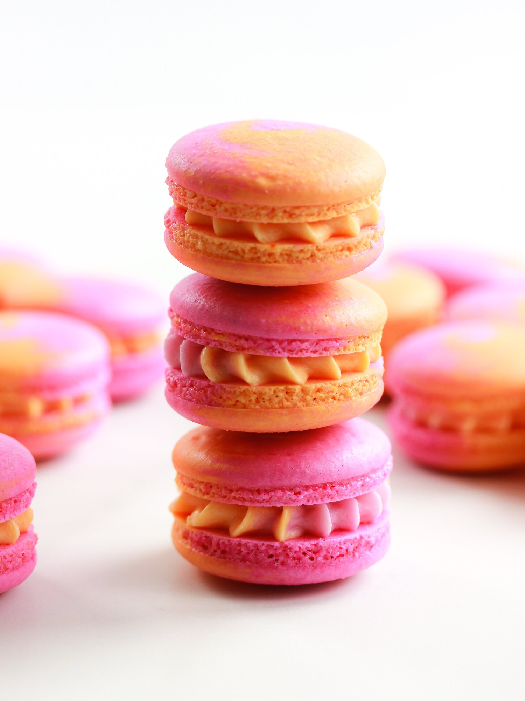
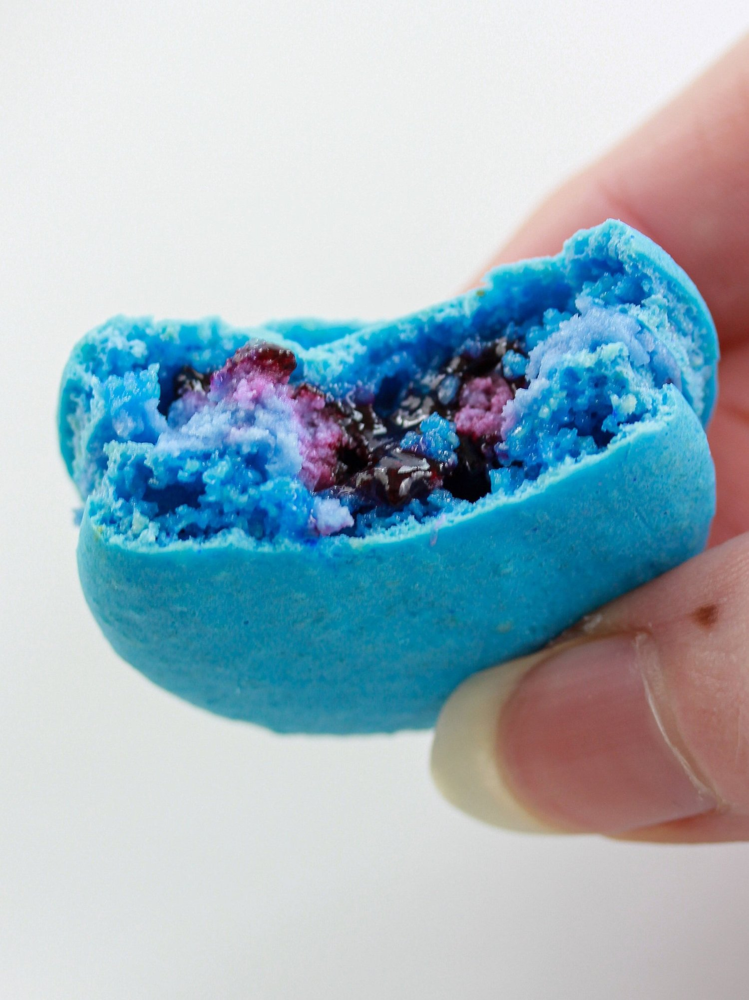
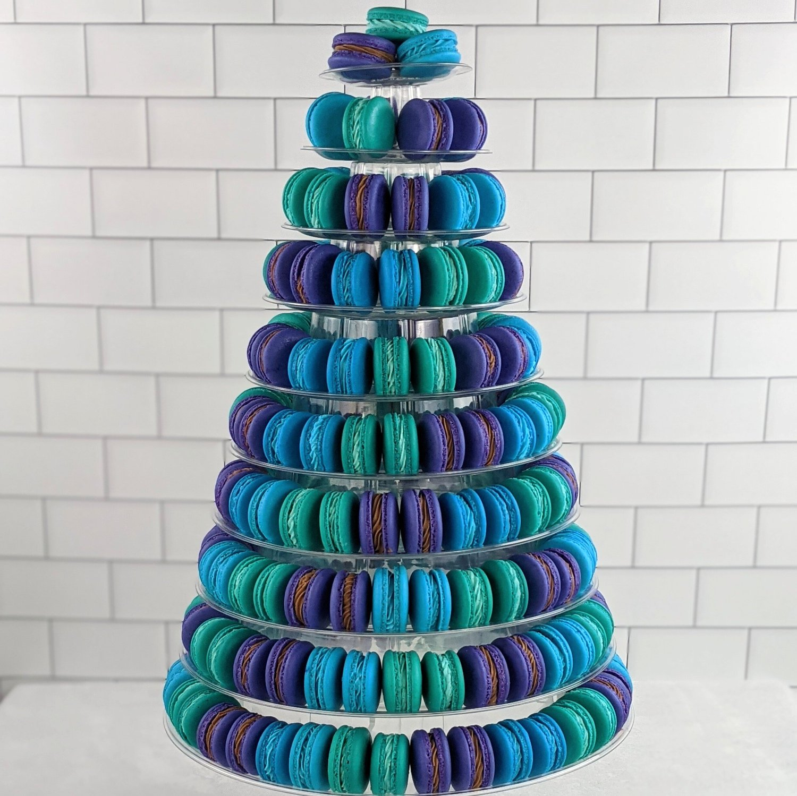
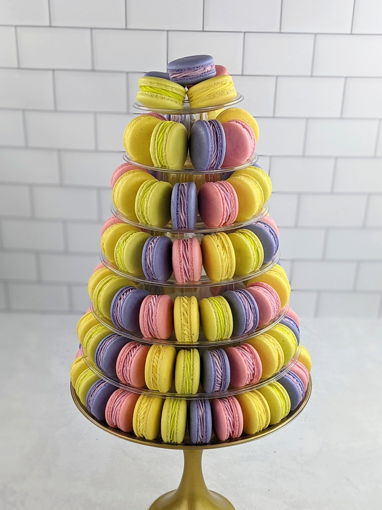
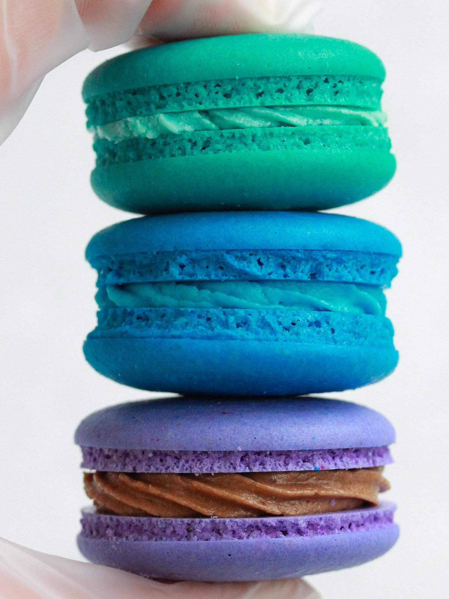

Professing my love for vegan macarons
While I try to figure out my direction as I near graduating (I quit my “day” job), I’ve been finding joy and fulfillment in doing vegan cake orders for events, as well as cupcakes and macarons. I try to stay inspired to create anything and everything that I feel like in the down time. Keeping inspired helps me challenge myself, learn in the process, and discover more about myself. If you’re a creative person, you can understand how baking can be truly therapeutic.


One shocker for me is how much I’ve fallen in love with making vegan macarons. I’ve had a few local macaron orders, my first macaron tower was for a wedding here in Atlanta (it was incredible!), and I’ve got a third macaron tower in the works for an event. I have been loving making assortments for friends and family to try, and I have decided to stop taking cake orders for now while I focus on these vegan macs. I am focusing all my time on testing/learning/improving, and I’m hoping to be able to ship them to friends safely ASAP :) so that it’s not limited to Atlanta deliveries.


It’s so funny because a year ago I didn’t think too much about macarons. I remember trying them in France and they were great, but I don’t think I understood at the time the delicacy of what I was eating haha. Ever since going vegan, it’s been hard for me to even get a hold of vegan macarons, and when I have, I just didn’t care. Now that I’ve gone through the beginning of my macaron baking journey, I just love the little things and appreciate them so much. So special, so delicate, so much character behind each one. I just think it’s ironic how quickly that changed.
Anyways, I want to thank you for sticking with me, through all things considered. I am not immune to the ebb and flows of life, and I am so grateful for anyone to care about what I’m up to. Just figuring out what motivates me every day and trying to follow that feeling.
I imagine the future has a lot of macarons in store, as well as maybe some vegan dessert recipes (maybe more cake recipes now that I’m not trying to sell them)!
We’ll see. -Kim
